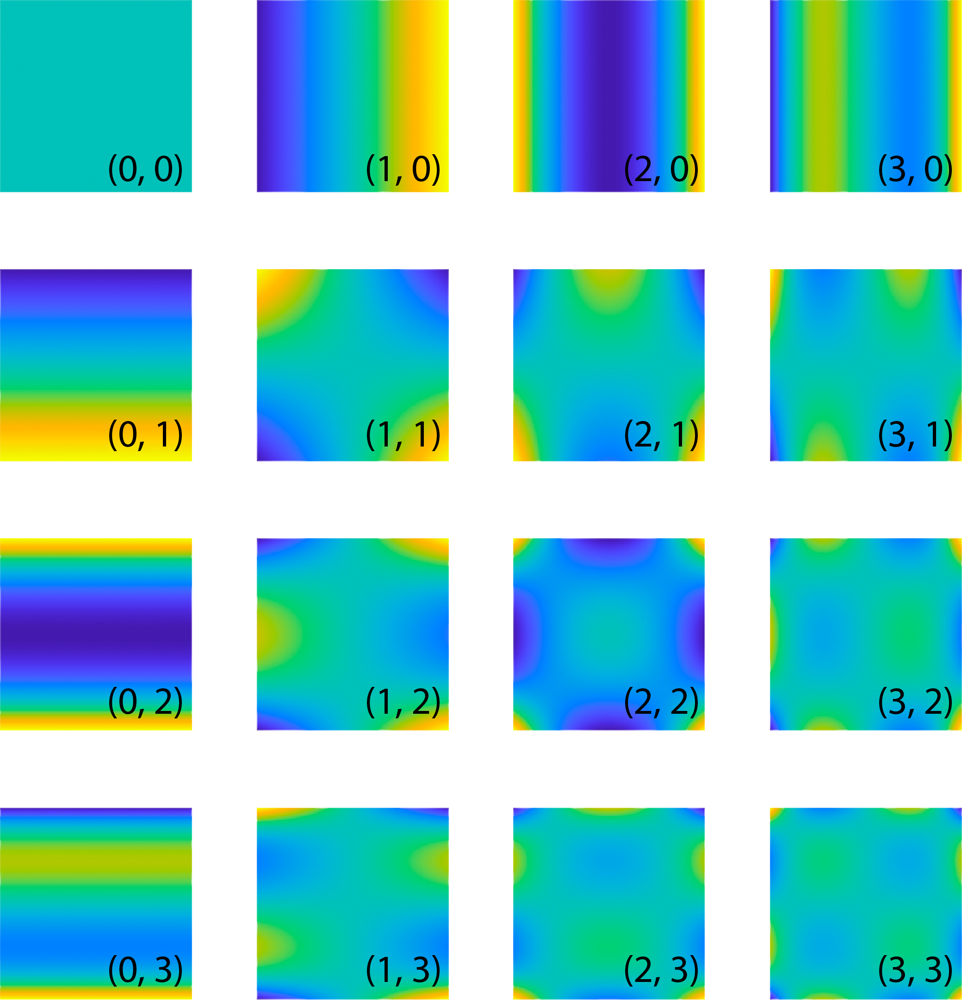
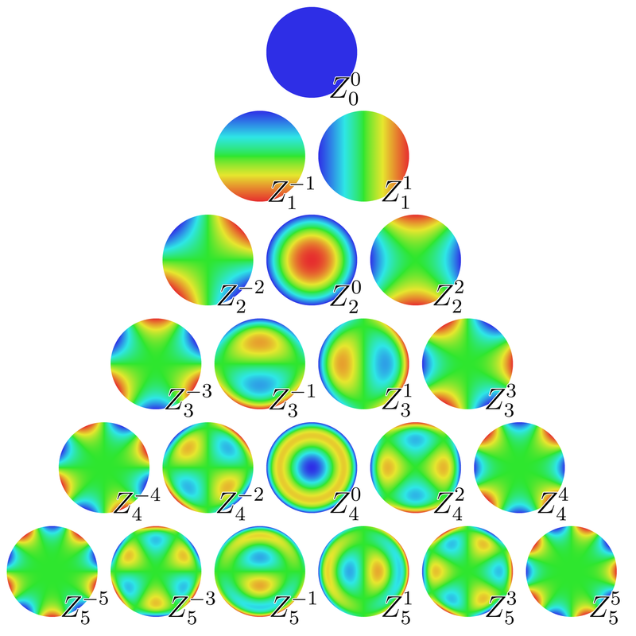

The ImageEM class
ImageEM is a handle class. Properties ———-
properties
name |
type |
default |
description |
|---|---|---|---|
|
Microscope |
Microscope object |
|
|
Illumination |
Illumination object |
|
|
char |
Any comment on the image |
name |
type |
default |
description |
|---|---|---|---|
|
double array |
x component image of the electric field |
|
|
double array |
y component image of the electric field |
|
|
double array |
z component image of the electric field |
|
|
ImageEM |
Incident electric field |
name |
type |
dependence |
description |
|---|---|---|---|
|
double |
|
Number of columns |
|
double |
|
Number of rows |
|
double |
|
Image of the Efield intensity |
|
double |
|
Amplitude of the Efield |
|
double |
|
Phase image |
ImageEM methods
alpha_ImageProfile
Return the polarisability, optical volume and dry mass of small objects.
Synthax
val = obj.alpha_ImageProfile();
Description
This method of the ImageEM and ImageQLSI classes returns the polarisability, optical volume and dry mass of small objects, using a radial profile method. The algorithm involves a sum of the pixels on a circular area. The method opens a window with the image. First, click on the OPD image to zoom in on the particle of interest, and press ‘z’ when the zoom is correct. Second, click on the center of the particle. A new figure will show up, plotting the pixel summation as a function of the radius of the circular area, from 0 to 100 px. Finally, click two times on the graph to define the range of value corresponding to a proper convergence of the integration. In practice, the line shape should feature a plateau, and the user should click at the beginning and at the end of the plateau. For instance, in this example, the user could click on \(x=18\) and \(x=40\):

Finally, the values of polarisability, and optical volume are returned as a structure, containing the fields alpha, OV and OVw. OVw is the weighted optical volume as defined in Ref. [1].
Name-Value inputs
Several Name-Value inputs can be used to adjust the way the procedure works:
'nmax', default value: 40Maximum radius of the integration area.
'nBkg', default value: 3width of the boundary considered to calculate the zero value of the background.
'NNP', default value: 1Number of particle to be clicked on the image. The procedure will stoped after N particles will be processed, and data returned data will be an array of values.
'zoom', default value: 1Enable the user to first zoom before clicking on the particle
'step', default value: 1Specifying a value larger than 1 can make the process faster. The integration as a function of the radius will be calculated only every
Npixels, whereNis the step value.'keepPoint', default value: falseKeep the same clicking point from one image to another. It can save time if many images need to be processed, and if the NP does not move from one image to another.
'display', default value: falseDisplay the results of all the measurements in a single graph. Makes sense only if multiple measurements are made within a single call of the function.
applyPCmask
Returns a re-calculated image with a phase contrast mask in the objective lens.
Synthax
obj = obj0.applyPCmask(mask);
objList = objList0.applyPCmask(mask);
Description
obj = obj0.applyPCmask(mask); recalculate the E field at the image plane when adding a phase mask at the pupil of the objective. It is used to model Zernike phase-contrast microscopy. mask is a PCmask* object.
ImageQLSI objects vectors can also be used with this method. The transformation applies then to all the objects of the vector.
applyPhaseShift
Apply a phase shift to the whole image.
Synthax
obj = obj0.applyPhaseShift(phi);
Description
obj = obj0.applyPhaseShift(phi); applies a phase shift phi to the whole image. Used to model phsae-shifting techniques, not really useful in CGM/QLSI.
binning
Performs 2x2 or 3x3 pixel binning of the images of the ImageEM object.
Synthax
obj.binning()
obj.binning(n)
obj2 = obj.binning(___);
Description
obj can by a vector of ImageEM objects. In that case, the treatment will be perform on all the objects of the list.
obj.binning() performs, by default, a 3x3 binning of the images of obj.
obj.binning(n) performs, \(n\times n\) binning of the images of obj. Only works with n = 2, 3, 4, 6.
If an output argument is specified, obj is not modified, but duplicated.
crop
Crop the images of the object.
Synthax
obj.crop()
obj.crop(Name, Value)
objList.crop(___)
obj2 = obj.crop(___);
Description
obj.crop() crops the E fields of the object of the Ref object, identically. A figure window opens, inviting the user to click on the image to define a square area centered in the middle of the image.
Objects vectors can also be used with this method. The transformation applies then to all the objects of the vector.
If an output is used, obj2, then the object is not modified, and is duplicated.
Name-value arguments
Note
Specify optional pairs of arguments as Name1 = Value1, ..., NameN = ValueN, where Name is the argument name and Value is the corresponding value. Name-value arguments must appear after other arguments, but the order of the pairs does not matter.
Example:
obj.crop(___,'Center','Manual','Size',300)
The Name-Value arguments in the crop method are used to define how the reference area is chosen. This reference area is the one that will feature a no-tilt when the tilt correction will be applied. When some arguments are set to 'Manual', a figure appears so that the user can select this area, in 1 or 2 clicks.
'Center'With
crop(___,'Center','Manual'), the user has to first click on the center of the reference area. If the argument is set to'Auto', then this step is skipped, and the center is automatically set to the center of the image. Also, the user can indicate the coordinates of the center:crop(___,'Center',[x_c, y_c]).'Size'With
crop(___,'Size','Manual'), once the center is defined (either manually or automatically), the user has to click on the figure to define the shape of the area, around the center point. The user can also indicate the dimensions of the reference area:crop(___,'Size',Npx)for a square area, orcrop(___,'Size',[Nx, Ny])for a rectangular area.'twoPoints'Instead of using the
'Center'and'Size'keywords, one can also click on two opposite corners of the reference area, usingcrop(___,'twoPoints',true).'params'One can also direclty write the coordinates of the crops, using
crop(___,'params', [x1, x2, y1, y2]). In this case, no figure opens.
CrossSections
Return the polarisability and cross sections of a NP image.
Synthax
val = obj.CrossSections()
Description
This function applies when dealing with the image of a singla nanoparticle.
obj can by a vector of ImageQLSI objects. In that case, the treatment will be perform on all the objects of the list.
val = obj.CrossSections() return a NPprop object containing the complex optical polarisability of the NP, and the 3 cross-sections.
dmd
Returns the dry mass density (DMD) image.
Synthax
val = obj.dmd();
Description
val is the DMD image, pg/um^2. This function actually just consists of multiplying the OPD in [nm] by 5.56e-3.
dxSize
Returns the dexel size (i.e. the camera pixel size).
Synthax
val = obj.dxSize();
Description
Returns the dexel size (i.e. the camera pixel size), val = obj.Microscope.CGcam.dxSize;.
EE0
Return the value of the incident field at the center of the field of view.
Synthax
val = obj.EE0()
Description
This method returns the value of the incident field at the center of the field of view. If obj is already an incident field, it simply returns its value at the center of the field of view.
obj can by a vector of ImageEM objects. In that case, the treatment will be perform on all the objects of the list.
EE0n
Return the value of the norm of the incident field at the center of the field of view.
Synthax
val = obj.EE0()
Description
This method returns the norm of the incident field at the center of the field of view. If obj is already an incident field, it simply returns the norm of the field at the center of the field of view.
obj can by a vector of ImageEM objects. In that case, the treatment will be perform on all the objects of the list.
Escat
Return the image of the scattered electric field as an ImageEM object.
Synthax
val = obj.Escat()
Description
This method returns the norm of the incident field at the center of the field of view. If obj is already an incident field, it simply returns the norm of the field at the center of the field of view.
obj can by a vector of ImageEM objects. In that case, the treatment will be perform on all the objects of the list.
figure
Display the PhaseLAB GUI
Synthax
obj.figure() app = obj.figure();
Description
Displays the images of the obj within the GUI (graphical user interface) of PhaseLAB. See the The GUI of section for details.
flatten
Flatten the background of the OPD image.
Synthax
% general form
obj.flatten()
obj.flatten(method)
obj.flatten(___, Name, Value)
objList.flatten(___)
obj2 = obj.flatten(___);
% examples
obj.flatten('Zernike')
obj.flatten('Legendre', 'mnax', 3, 'threshold', 1.2);
obj.flatten('Chebyshev', 'kind', 1, 'mnax', 3)
obj.flatten('Gaussian', 'nGauss', 100);
Description
obj.flatten() removes the tilt and coma aberration of the image, by an image moment calculation.
obj.flatten(method) removes the tilt and coma aberration of the image, where the image momenst belong to a specific class of polynomials. The possible values are ‘Waves’,’Zernike’,’Chebyshev’,’Hermite’,’Legendre’,’Gaussian’. The default value is ‘Gaussian’. In this latter case, no moment is calculated. The process just consists in removing a blurred image to the image.
obj.flatten(___, Name, Value) enables the use of optional inputs, defined by keywords ‘Name’. The possibles Names are:
'nmax'Tells until which order the image moments are calculated. Unless when method=’Gaussian’. For instance,
obj.flatten('Legendre', 'nmax', 2)
removes all the \((n,m)\) Legendre moments from the image such that \(n+m\le n_\mathrm{max}=2\), i.e., (0, 0), (1, 0), (0, 1), (1, 1), (2, 0), (0, 2). Here is a repesentation of the Legendre polynomials.
obj.flatten('Zernike', 'nmax', 2)
removes all the \((n,m)\) Zernike moments from the image up to \(n=n_mathrm{max}=2\), i.e., (0, 0), (1, -1), (1, 1), (2, -2), (2, 0), (2, 2). Here is a representation of th Zernike polynomials.
'threshold'Models the application of a half wave plate. The associated value is the angle of the fast axis of the wave plate.
'kind'Models the application of a quarter wave plate. The associated value is the angle of the fast axis of the wave plate.
'display'Models the application of a quarter wave plate. The associated value is the angle of the fast axis of the wave plate.
'nGauss'Models the application of a quarter wave plate. The associated value is the angle of the fast axis of the wave plate.
{kind=link}
{kind=link}
flipud
Flips the images of the object about the horizontal axis (flips up-down).
Synthax
obj.flipud();
objList.flipud();
obj2 = obj.flipud();
Description
ImageEM objects vectors can also be used with this method. The transformation applies then to all the objects of the vector.
If an output obj2 is used, then the object is not modified, and duplicated.
fliplr
Flips the images of the object about the vertical axis (flips left-right).
Synthax
obj.fliplr();
objList.fliplr();
obj2 = obj.fliplr();
Description
ImageEM objects vectors can also be used with this method. The transformation applies then to all the objects of the vector.
If an output obj2 is used, then the object is not modified, and duplicated.
FT
Return the square of the norm of the Fourier transform of the E field.
Synthax
I = obj.FT();
Description
I = obj.FT() returns the square of the norm I of the Fourier transform of the E field:
imageHSV
display a mix of the T an OPD images according to a HSV colorscale pattern.
Synthax
imageHSV(obj);
Description
Returns the dexel size (i.e. the camera pixel size), val = obj.Microscope.CGcam.dxSize;.
Example
Jones
apply Jones matrices to the E field of the images.
Synthax
% general forms
obj = obj0.Jones([a, b; c, d]);
obj = obj0.crop(Name, Value);
% examples
obj2 = obj.Jones([1 0; 0 0]);
obj2 = obj.Jones('P', 0, 'HWP', 45, 'QWP', 45);
Description
The Jones function models the application of polarizers and wave plates to the image, with a Jones matrix formalism. For a given E field \(E = (E_x, E_y)\), the new E field \(E'\) reads
\([a, b; c, d]\) is the Jones matrix. For instance, for a polarize along the x axis, it reads
For a half wave plate with fast axis along x, it reads
And for a half wave plate rotated by an angle \(\theta\), it reads
obj = obj0.Jones([a, b; c, d]); applies the Jones matrix to every pixel of the E field, and incident E field of the ImageEM object.
obj = obj0.Jones(Name, Value); applies the optical component Name placed at an angle Value. Several name-value pairs can be used: Name1 = Value1, ..., NameN = ValueN. They will be applied to the images in the order they are specified.
Here are the possible 'Name':
'P'Models the application of a linear polarizer. The associated value is the angle of the polarizer.
'HWP'Models the application of a half wave plate. The associated value is the angle of the fast axis of the wave plate.
'QWP'Models the application of a quarter wave plate. The associated value is the angle of the fast axis of the wave plate.
lambda
lambda
Returns the wavelength of the illumination.
Synthax
val = obj.lambda();
Description
Returns the wavelength of the illumination used to acquire the image, val = obj.Illumination.lambda;.
MakeMoviedx
MakeMoviedx
opendx
opendx
to be fulfilled
overview
overview
pxSize
Returns the image pixel size at the sample plane.
Synthax
val = obj.pxSize();
Description
Returns the pixel size at the sample plane, val = obj.Microscope.CGcam.dxSize;.
rot90
Rotate the images of the object by multiples of 90°.
Synthax
obj.rot90();
obj.rot90(k);
objList.rot90(___);
obj2 = obj.rot90(___);
Description
obj.rot90() rotates the images of the object by 90°, counterclockwise.
obj.rot90(k) rotates the images of the object by \(k\times90°\), counterclockwise. k must be an integer and can be negative.
ImageEM object vectors can also be used with this method. The transformation applies then to all the objects of the vector.
If an output obj2 is used, then the object is not modified, and duplicated.
Rytov
Returns the Rytov image.
Synthax
val = obj.Rytov();
Description
Method that returns the Rytov image, defined by [2]
where \(\lambda\) is the wavelength, \(n\) the refractive index of the surrounding medium, \(T\) the intensity image and \(\varphi\) the phase image.
save
Export the T and OPD images as jpg and txt files.
Synthax
% general patterns
obj.save(folder)
obj.save(folder, Names)
% Examples,
obj.save('savedData', 'T')
obj.save('savedData', 'OPD')
obj.save('savedData', 'T', 'OPD')
obj.save('savedData', 'T', 'OPD', 'Ex', 'Ey')
Description
Export the intensity, wavefront, phase, and/or E fields of the ImageEM object into a folder, as .txt and .jpg files. To indicate which images are saved, a list a Names has to be indicated as separated arguments, corresponding to the names of the properties, e.g., 'T', 'OPD', 'Ex', 'Ey'.
sizeof
sizeof
Returns the size of the object in Kb.
Synthax
obj.sizeof()
val = obj.sizeof();
Description
Returns or display the size of the object (list) occupied on the hard drive. If not output is specified, it displays the size, in Mb, or Kb, in the command window. Otherwise, it returns the size in bytes.
sum
Coherent sum of the fields.
Synthax
obj = sum(objList);
Description
The method uses the overloaded operator + to sum all the E fields of list of ImageEM E fields in objList. It simply sums the electromagnetic fields associated to all 2 ImageEM objects. Note that it also sums the incident fields.
Warning
This method is relevant the different images correspond to the same sample, illuminated with various plane waves with different incidence angles at the same time, for instance.
When the list of images does not correspond to the same sample, for instance when it consists of different nanoparticles at different locations, one should not use this method to get the image of all the nanoparticles at the same time. There will be no self-consistent optical coupling between these objects, and the incident E fields should be be sumed in this case. Prefer summing dipoles (DIlist=DI1+DI2) and then imaging the dipole array(DIlist.imaging()), which will run a DDA self consistent calculation of the dipolar moments.
write
copy the properties of an ImageEM object into another.
Synthax
write(obj, obj_in)
obj.write(obj_in)
Description
The method copies all the properties of obj_in into the prexisting object obj, without creating a new handle.
+
Defines the addition between two ImageEM objects: IM1 + IM2.
Synthax
obj = plus(obj1, obj2);
obj = obj1 + obj2;
obj = obj1 + obj2 + ... + objN;
Description
The method overloads the operator + by defining the method plus. It simply sums the electromagnetic field associated to the 2 ImageEM objects. Note that it also sums the incident fields. It is relevant to use when the sample is illuminated at the same time with different plane waves at different angles for instance.
Warning
By summing images of different particles/dipoles, there is no self-consistent optical coupling between these objects. Prefer summing dipoles and then imaging the dipole array, which will run a DDA self consistent calculation of the dipolar moments.
The method also work with several additions at a time: obj = obj1 + obj2 + ... + objN;. When all these images are in a ImageEM array, one can write obj = sum(objList).